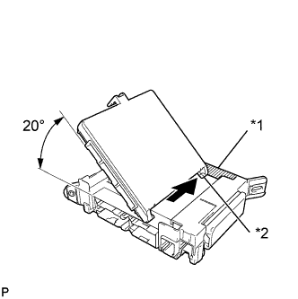
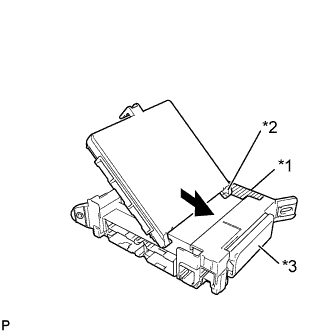
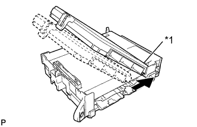
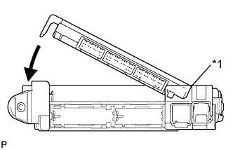
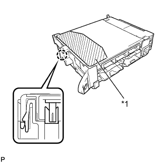
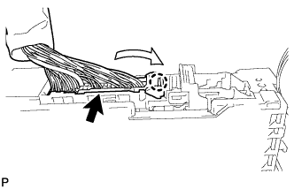
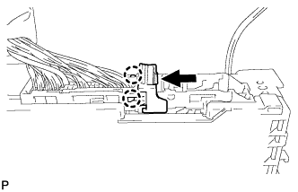
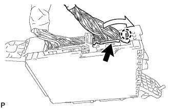
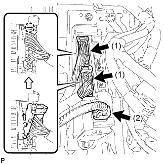
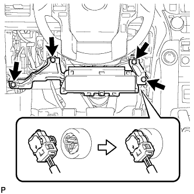

ГЛАВНЫЙ ЭБУ КУЗОВА > УСТАНОВКА |
| 1. УСТАНОВИТЕ БОРТОВОЙ ЭБУ СЕТИ МУЛЬТИПЛЕКСНОЙ СВЯЗИ |
|  |
Вставьте бортовой ЭБУ сети мультиплексной связи так, чтобы он соприкасался с боковой стенкой корпуса для направляющего элемента, как показано на рисунке.
| *1 | Боковая стенка корпуса |
| *2 | Направляющая часть |
|  |
Сдвиньте направляющую бортового ЭБУ сети мультиплексной связи вдоль боковой стенки корпуса по направлению к плавким предохранителям распределительного блока, как показано на рисунке.
| *1 | Боковая стенка корпуса |
| *2 | Направляющая часть |
| *3 | Предохранители распределительного блока |
|  |
Сдвиньте корпус бортового ЭБУ сети мультиплексной связи таким образом, чтобы соприкоснулся со стороной A, как показано на рисунке.
| *1 | Сторона A |
|  |
После соприкосновения бортового ЭБУ сети мультиплексной связи со стороной A распределительного блока (ось вращения) поверните его вниз, как показано на рисунке.
| *1 | Точка касания стороны A |
|  |
Для закрепления бортового ЭБУ сети мультиплексной связи надавите на зону нажатия таким образом, чтобы вошел в зацепление захват.
| *1 | Зона нажатия |
| 2. УСТАНОВИТЕ РАСПРЕДЕЛИТЕЛЬНЫЙ БЛОК СО СТОРОНЫ ВОДИТЕЛЯ В СБОРЕ |
|  |
Установите разъем и закрепите его захватом, как показано на рисунке.
|  |
Введите в зацепление 2 захвата, чтобы зафиксировать защелку разъема, как показано на рисунке.
|  |
Введите в зацепление захват, чтобы подсоединить разъем, как показано на рисунке.
Установите распределительный блок со стороны водителя в сборе и закрепите его болтом и 2 гайками.
|  |
Подсоедините разъем (1).
Введите в зацепление 2 захвата, чтобы подсоединить 2 разъема (2), как показано на рисунке.
Подсоедините 3 разъема.
| 3. УСТАНОВИТЕ ПОДУШКУ БЕЗОПАСНОСТИ № 1 ДЛЯ ЗАЩИТЫ КОЛЕНЕЙ В СБОРЕ (для моделей с подушкой безопасности для защиты коленей) |
|  |
Подсоедините разъем.
Установите подушку безопасности в сборе и закрепите ее 4 болтами.
| 4. УСТАНОВИТЕ НИЖНЮЮ ОТДЕЛОЧНУЮ НАКЛАДКУ ПАНЕЛИ ПРИБОРОВ |
Подсоедините все разъемы и все кабели.
Для моделей без подушки безопасности для защиты коленей:
Установите нижнюю отделочную накладку панели приборов и закрепите ее 7 фиксаторами.
Для моделей с подушкой безопасности для защиты коленей:
Установите нижнюю отделочную накладку панели приборов и закрепите ее 14 фиксаторами.
Вверните 2 болта <C>.
Введите в зацепление 2 захвата, чтобы закрыть крышку.
| 5. УСТАНОВИТЕ НИЖНЮЮ ОТДЕЛОЧНУЮ НАКЛАДКУ ПАНЕЛИ ПРИБОРОВ |
Подсоедините все разъемы.
Установите отделочную накладку панели приборов и закрепите ее 4 фиксаторами.
| 6. УСТАНОВИТЕ ОБЛИЦОВКУ ОТДЕЛОЧНОЙ НАКЛАДКИ ПАНЕЛИ ПРИБОРОВ (для моделей с правосторонним рулевым управлением) |
Подсоедините все разъемы.
Установите облицовку отделочной накладки панели приборов и закрепите ее 4 фиксаторами.
| 7. УСТАНОВИТЕ ДЕКОРАТИВНЫЙ ЭЛЕМЕНТ ОБЛИЦОВКИ ПАНЕЛИ УПРАВЛЕНИЯ (для моделей с левосторонним рулевым управлением) |
Установите декоративный элемент отделочной накладки панели приборов и введите в зацепление 3 фиксатора.
| 8. УСТАНОВИТЕ ЛЕВУЮ БОКОВУЮ ПАНЕЛЬ ПРИБОРОВ |
Введите в зацепление 5 фиксаторов, захват и 3 направляющие, чтобы установить боковую панель приборов.
| 9. УСТАНОВИТЕ НИЖНЮЮ КРЫШКУ ПАНЕЛИ ПРИБОРОВ № 1 В СБОРЕ |
Для моделей с левосторонним рулевым управлением:
Введите в зацепление 2 фиксатора и 2 направляющих, чтобы установить нижнюю крышку панели приборов № 1.
Заверните винт.
Для моделей с правосторонним рулевым управлением:
Введите в зацепление 3 фиксатора и 2 направляющих, чтобы установить нижнюю крышку панели приборов № 1.
Заверните винт.
| 10. УСТАНОВИТЕ БОКОВУЮ ОБЛИЦОВОЧНУЮ НАКЛАДКУ С ЛЕВОЙ СТОРОНЫ КОЖУХА |
Для 5-дверных моделей:
Установите левую боковую облицовочную накладку кожуха (Нажмите здесь).
Для 3-дверных моделей:
Установите левую боковую облицовочную накладку кожуха (Нажмите здесь).
| 11. УСТАНОВИТЕ ОПОРНУЮ НАКЛАДКУ ЛЕВОЙ ДВЕРИ В СБОРЕ |
Для 5-дверных моделей:
Установите опорную накладку левой двери в сборе (Нажмите здесь).
Для 3-дверных моделей:
Установите опорную накладку левой двери в сборе (Нажмите здесь).
| 12. ПОДСОЕДИНИТЕ ПРОВОД К ОТРИЦАТЕЛЬНОМУ ВЫВОДУ АККУМУЛЯТОРНОЙ БАТАРЕИ |
| 13. ПРОВЕРЬТЕ КОНТРОЛЬНУЮ ЛАМПУ АВАРИЙНОГО СОСТОЯНИЯ SRS |
Проверьте контрольную лампу аварийного состояния SRS (Нажмите здесь).